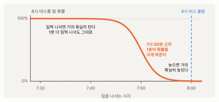
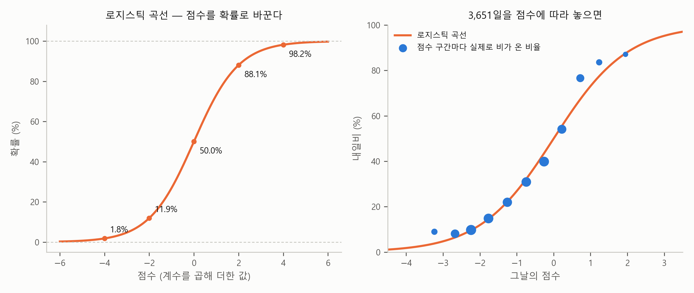

3. S자 곡선 — 로지스틱 회귀#
직선이 0%와 100% 밖으로 나간다면, 그 사이에서 휘는 선을 쓰면 됩니다. 이 절의 답은 이것입니다. 로지스틱 회귀는 확률을 두 단계로 계산합니다. 먼저 지금까지처럼 변수에 계수를 곱해 더한 값을 만들고, 그 값을 S자 모양의 곡선에 넣어 0%와 100% 사이의 확률로 바꿉니다. 이 곡선이 보고서 그림의 왼쪽 패널에서 휘어 있던 두 곡선의 정체입니다.
버스 정류장의 S자#
아침 버스를 생각해 봅시다. 8시 정각에 떠나는 버스가 있고, 집에서 정류장까지는 보통 10분이 걸립니다. 하지만 횡단보도 신호등에 걸리느냐에 따라 7분이 걸리기도 하고 13분이 걸리기도 합니다. 집을 나서는 시각을 가로축에, 이 버스를 탈 확률을 세로축에 놓고 그래프를 그리면 어떤 모양이 될까요?
7시 30분이나 7시 35분에 나서면 탈 확률은 100%에 붙어 있습니다. 그래프의 왼쪽은 평평합니다. 7시 45분쯤부터 확률이 내려가기 시작해, 7시 50분 근처에서 가장 가파르게 떨어집니다. 7시 55분을 지나면 다시 0% 근처에 붙어 평평해집니다. 양 끝은 평평하고 가운데는 가파른 모양, 알파벳 S를 옆으로 늘인 것 같은 모양입니다.
그림 3-1이 이 모양을 대략 그린 것입니다.

그림 3-1. 8시 버스를 탈 확률. 데이터가 아니라 모양만 보이려고 대략 그린 그림이다.
이 모양에는 앞 절에서 본 직선의 두 문제가 모두 해결되어 있습니다. 첫째, 곡선은 0%와 100% 사이에 머뭅니다. 아무리 일찍 나서도 100%에 가까워질 뿐 넘지 않습니다. 둘째, 기울기가 자리마다 다릅니다. 가운데에서는 1분이 확률을 크게 바꾸고, 양 끝에서는 거의 바꾸지 못합니다.
점수를 확률로 바꾸는 곡선#
로지스틱 회귀는 이런 S자 곡선을 쓰는 회귀입니다. 계산은 두 단계입니다.
첫째 단계는 지금까지와 같습니다. 변수마다 계수를 곱해 모두 더합니다. 이번 장에서는 이렇게 더한 값을 점수라고 부르겠습니다.
선형확률모형이라면 이 값이 바로 확률이었습니다. 그래서 확률이 0% 아래로도, 100% 위로도 나갔습니다. 로지스틱 회귀는 둘째 단계를 하나 더 거칩니다. 점수를 다음 식에 넣어 확률로 바꿉니다.
여기서 \(e\)는 자연상수(Euler’s number)라고 부르는, 약 2.718인 수입니다. 다중회귀분석 장에서 더미의 계수를 “몇 배”로 바꿀 때 쓴 바로 그 수입니다. 식이 낯설어 보여도 하는 일은 단순합니다. 어떤 점수가 들어오든 0과 1 사이(0%와 100% 사이)의 숫자를 내놓습니다. 점수가 아주 크면 \(e^{-\text{점수}}\)는 0에 가까워져 분수는 1에 가까워지고, 점수가 아주 작으면 \(e^{-\text{점수}}\)가 아주 커져 분수는 0에 가까워지기 때문입니다. 점수에 몇 가지 값을 넣어 보면 표 3-1과 같습니다.
표 3-1. 점수와 확률
점수 |
−4 |
−2 |
0 |
2 |
4 |
|---|---|---|---|---|---|
확률 |
1.8% |
11.9% |
50.0% |
88.1% |
98.2% |
점수가 0이면 확률은 정확히 50%입니다. 점수가 커질수록 확률은 100%에 가까워지지만 넘지 못하고, 작아질수록 0%에 가까워지지만 그 아래로 내려가지 않습니다. 점수 −4에서 −2로 2만큼 오르면 확률은 10.1%포인트 오르는데, 점수 −1에서 1로 똑같이 2만큼 오르면 26.9%에서 73.1%로 46.2%포인트 오릅니다. 같은 점수 변화라도 가운데에서는 확률이 크게 움직이고 양 끝에서는 조금 움직입니다.
그림 3-2의 왼쪽 패널이 이 곡선입니다. 표 3-1의 다섯 점이 곡선 위에 찍혀 있습니다. 그림 3-1의 버스 그래프와 좌우가 뒤집혔을 뿐 같은 S자입니다. 이 곡선을 로지스틱 곡선(logistic curve)이라고 부르고, 로지스틱 곡선으로 확률을 설명하는 회귀를 로지스틱 회귀라고 부릅니다.

그림 3-2. 왼쪽: 로지스틱 곡선. 점수가 어떤 값이든 확률은 0%와 100% 사이에 있다. 오른쪽: 보고서의 계수로 날마다 점수를 계산하고, 점수를 구간으로 나눠 구간마다 다음 날 실제로 비가 온 비율을 찍었다(파란 동그라미, 크기는 일수). 주황 곡선은 왼쪽과 같은 로지스틱 곡선이다.
보고서의 계수로 점수 계산하기#
이제 보고서의 회귀 결과를 다시 봅시다. 보고서의 표에 적힌 계수는 바로 이 점수의 계수입니다. 표준오차와 함께 다시 정리하면 표 3-2와 같습니다.
표 3-2. 로지스틱 회귀 — 내일 비가 올 확률을 변수 다섯 개로 설명
계수 |
|
|---|---|
저녁 습도 (21시, %) |
0.011 (0.003) |
기압 변화 (21시 − 9시, hPa) |
−0.155 (0.017) |
저녁 구름양 (21시, 0 ~ 10) |
0.178 (0.012) |
오늘비 (21시까지, 예 = 1) |
0.281 (0.110) |
여름 (6 ~ 8월 = 1) |
0.606 (0.092) |
상수 |
−2.962 (0.186) |
주: 괄호는 표준오차. \(n\) = 3,651일.
보고서 요약 첫 줄의 “맑고 건조한 날”을 계산해 봅시다. 습도 50%, 기압 변화 0, 구름양 2, 오늘 비 없음, 여름이 아닌 날입니다. 이 값들을 넣으면 점수는 다음과 같습니다.
점수 −2.06을 곡선에 넣으면 확률은 11%쯤입니다. 표 3-1에서 점수 −2가 11.9%였으니 그 근처입니다. 보고서가 말한 11.5%가 이렇게 나온 것입니다. 표의 계수는 반올림한 값이라 손으로 계산하면 끝자리가 조금 다를 수 있습니다. 같은 방법으로 “흐리고 습한 날”(습도 85%, 구름양 8)을 계산하면 점수는 약 −0.6, 확률은 36.0%입니다.
데이터는 S자를 따르나#
곡선을 쓰기로 한 것은 우리의 선택입니다. 데이터가 정말 이런 모양인지는 따로 확인해야 합니다. 그림 3-2의 오른쪽 패널이 그 확인입니다. 3,651일 하루하루의 점수를 보고서의 계수로 계산한 다음, 점수가 비슷한 날끼리 묶어 다음 날 실제로 비가 온 비율을 찍었습니다.
그림에서 보듯이 파란 동그라미들이 주황 곡선을 꽤 잘 따라갑니다. 점수가 −2 근처인 날들은 10% 남짓, −1 근처는 20 ~ 30%, 0 근처는 40 ~ 50%대에서 비가 왔습니다. 곡선과 다른 곳도 있습니다. 점수가 0.5에서 1.5 사이인 날들(285일)은 곡선이 말하는 것보다 비가 더 자주 왔고, 점수가 가장 낮은 날들(67일)도 그랬습니다. 이런 어긋남을 어떻게 볼지는 5절에서 다시 다룹니다.
맑은 날과 흐린 날은 같은 곡선 위의 다른 자리#
이제 보고서 그림의 왼쪽 패널에서 두 곡선이 왜 다르게 휘었는지 알 수 있습니다. 맑고 건조한 날의 점수는 약 −2.06이고, 흐리고 습한 날의 점수는 약 −0.6입니다. 두 날은 같은 S자 곡선 위의 다른 자리에 있습니다. 맑은 날은 곡선의 아래쪽, 아직 평평한 곳에 있고, 흐린 날은 가운데에 더 가까운, 가파른 곳에 있습니다.
기압이 1hPa 더 내리면 점수는 어느 날이든 똑같이 0.155 올라갑니다. 기압 변화의 계수가 −0.155이고, 기압이 내리면 기압 변화가 음수가 되기 때문입니다. 그런데 가로로 같은 거리만큼 움직여도, 곡선이 평평한 곳에서는 확률이 조금 오르고 가파른 곳에서는 많이 오릅니다. 보고서가 같은 2hPa이 맑은 날에는 3.5%포인트, 흐린 날에는 7.4%포인트를 올린다고 한 까닭이 이것입니다. 이 이야기는 다음 절에서 계수를 확률의 말로 바꿔 보며 자세히 다룹니다.
계수는 어떻게 구하나 — 가장 그럴듯한 계수#
선형확률모형의 계수는 단순회귀분석 장에서 배운 최소제곱법으로 구했습니다. 잔차의 제곱을 더한 값이 가장 작아지는 계수였죠. 로지스틱 회귀는 다른 기준을 씁니다.
원리는 이렇습니다. 계수의 후보를 하나 정하면, 그 계수로 내일비 확률을 계산할 수 있습니다. 좋은 계수라면 다음 날 실제로 비가 온 날에는 높은 확률을, 비가 오지 않은 날에는 낮은 확률을 주었을 것입니다. 그래서 날마다 “모형이 실제로 일어난 일에 준 확률”을 봅니다. 비가 온 날은 모형이 말한 비 올 확률이고, 오지 않은 날은 비가 오지 않을 확률(100%에서 비 올 확률을 뺀 값)입니다.
사흘만으로 예를 들어 봅시다. 첫째 날은 다음 날 비가 왔고, 둘째 날과 셋째 날은 오지 않았습니다. 계수 후보 A는 사흘의 비 올 확률을 80%, 20%, 30%로 계산하고, 후보 B는 셋 다 50%로 계산한다고 합시다. 표 3-3이 두 후보가 실제로 일어난 일에 준 확률입니다.
표 3-3. 사흘의 실제 결과와 두 계수 후보
첫째 날 |
둘째 날 |
셋째 날 |
곱 |
|
|---|---|---|---|---|
다음 날 비 |
O |
X |
X |
|
후보 A |
||||
계산한 비 올 확률 |
80% |
20% |
30% |
|
실제로 일어난 일에 부여한 확률 |
0.8 |
0.8 |
0.7 |
0.448 |
후보 B |
||||
계산한 비 올 확률 |
50% |
50% |
50% |
|
실제로 일어난 일에 부여한 확률 |
0.5 |
0.5 |
0.5 |
0.125 |
표에서 보듯이 비가 오지 않은 둘째 날과 셋째 날에는 100%에서 비 올 확률을 뺀 값이 들어갑니다. A가 둘째 날에 준 확률은 1 − 0.2 = 0.8입니다. 셋을 곱하면 A는 0.448, B는 0.125입니다. A가 사흘의 실제 결과를 훨씬 그럴듯하게 설명합니다.
로지스틱 회귀는 이 곱이 가장 커지는 계수를 찾습니다. 3,651일의 실제 결과가 나올 확률을 가장 높게 만드는 계수, 즉 데이터를 가장 그럴듯하게 설명하는 계수입니다. 이 곱을 가능도(likelihood)라고 부르고, 가능도가 가장 커지는 계수를 찾는 방법을 최대가능도 추정(maximum likelihood estimation)이라고 합니다. 가능도는 우도라고도 합니다. 이 계수는 식 하나로 바로 계산되지 않아서, 컴퓨터가 계수를 조금씩 바꿔 가며 곱이 더 커지지 않는 곳을 찾습니다. 우리가 직접 할 일은 없습니다. AI나 통계 프로그램에 로지스틱 회귀를 해 달라고 하면 이 계산을 합니다.
계산 방법은 달라도 표준오차와 \(p\)값의 뜻은 지금까지와 같습니다. 표준오차는 다른 날들로 데이터를 다시 모아 계산하면 계수가 얼마나 흔들릴지를 말하고, \(p\)값은 참값이 0이라면 이만한 계수가 우연히 나올 확률입니다. 표 3-2에서 오늘비의 계수 0.281은 표준오차 0.110의 두 배 반쯤이고(\(p\)값 0.011), 나머지 네 계수는 표준오차의 3.6배에서 14.9배입니다(\(p\)값 모두 0.001 미만).
보고서에 \(R^2\)이 없는 까닭#
다중회귀분석 장의 보고서에는 \(R^2\)이 있었는데, 이번 보고서에는 없습니다. \(R^2\)은 최소제곱법에서 나온 숫자이기 때문입니다. 로지스틱 회귀는 최소제곱법을 쓰지 않으므로 보통의 \(R^2\)이 없습니다. 비슷한 역할을 하도록 만든 숫자(유사 \(R^2\), pseudo \(R^2\))가 있고 AI가 보고서에 넣기도 하지만, 보통의 \(R^2\)처럼 “흩어짐의 몇 퍼센트를 설명했다”로 해석할 수 없어서 이 장에서는 쓰지 않습니다. 모형이 확률을 얼마나 잘 말하는지는 5절에서 다른 방법으로 확인합니다.
계수의 부호#
계수를 해석하는 첫걸음은 지금까지와 같습니다. 계수가 양수이면 그 변수가 클수록 점수가 높고, 점수가 높으면 확률도 높습니다. 음수이면 반대입니다. 표 3-2에서는 기압 변화의 계수만 음수이고, 나머지 넷은 양수입니다. 기압 변화의 계수가 음수라는 것은 기압이 오를수록 확률이 낮고, 많이 떨어질수록 높다는 뜻입니다. 다른 조건이 같다면 저녁이 습할수록, 낮 동안 기압이 많이 떨어졌을수록, 저녁 하늘에 구름이 많을수록, 오늘 비가 왔다면, 여름이라면 내일 비가 올 확률이 높습니다. 보고서 해석의 첫 항목 “계수의 부호”가 이것입니다.
하지만 계수의 크기는 그대로 확률로 해석할 수 없습니다. 기압 변화의 계수 −0.155는 기압이 1hPa 더 내릴 때 점수가 0.155 오른다는 뜻이지, 확률이 15.5%포인트 오른다는 뜻이 아닙니다. 점수가 0.155 오를 때 확률이 얼마나 오르는지는 그날이 곡선의 어디에 있느냐에 달려 있습니다. 그러면 계수의 크기는 어떻게 이해해야 할까요? 다음 절의 물음입니다.
요약 — 이 절의 물음과 답
직선 대신 무엇을 쓰나? S자 모양의 로지스틱 곡선을 쓴다. 변수에 계수를 곱해 더한 점수를 곡선에 넣으면, 점수가 어떤 값이든 확률은 0%와 100% 사이에 있다. 이것이 로지스틱 회귀다.
같은 변화가 왜 출발점에 따라 다르게 작용하나? 곡선이 가운데는 가파르고 양 끝은 평평하기 때문이다. 기압이 1hPa 더 내리면 점수는 어느 날이든 0.155 오르지만, 맑은 날은 곡선의 평평한 곳에, 흐린 날은 가파른 곳에 있어 확률이 오르는 폭이 다르다.
계수는 어떻게 구하나? 다음 날 실제로 일어난 일을 가장 그럴듯하게 설명하는 계수를 찾는다. 이것을 최대가능도 추정이라고 한다. 표준오차와 \(p\)값의 뜻은 지금까지와 같지만, 보통의 \(R^2\)은 없다.